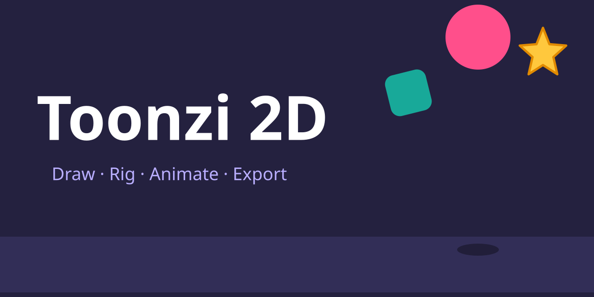
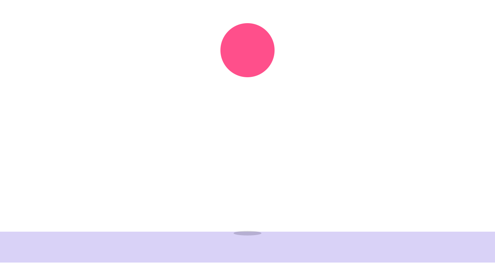

Toonzi 2D documentation
Everything the app can do, in short steps. You do not need to read it in order: pick a topic from the contents, or jump into a built-in tutorial and learn by doing.

1Getting started
Toonzi 2D is a 2D animation studio that runs in your browser. Everything stays on your device.
Open the app Try the interactive playground
Open it
- Open
index.htmlin the project folder (double-click it). Drawing, animating, tutorials and most exports work from the folder. - Or serve the folder with
python3 -m http.serverornpx serve. You need this for Export as › Interactive › HTML, which packs the app's files into one page. - Use Chrome or Edge for the best results (video export uses WebCodecs).
Make something in two minutes
- Click the logo at the top left. This is the main menu. Choose Tutorials… and start Drawing: brush and eraser. A guide character, Toonzi, walks you through it. (The tutorials also open by themselves on your first visit.)
- Or draw by yourself: press B for the Brush and draw on the stage.
- Press K to add a keyframe, click the ruler later in time, drag your drawing somewhere else and press K again.
- Press Home, then Space to play.
- Logo menu › Export… to get a video, an animated SVG and more.
Your work is safe
The app autosaves in your browser. For a file you can keep or send, use logo menu › Save project (Ctrl+S). It makes one .json file that includes your pictures and sounds. Open project… loads it, and Recent projects lists what you opened lately. Examples opens ready-made projects.
2The screen
The window has five parts.
| Part | What it is |
|---|---|
| Top bar | The logo (main menu), the project name, undo and redo, the snap magnet, the Made for chip (starts as Video), Settings (the gear) and Big stage. |
| Tool bar | On the left. The tools you draw and edit with, and the buttons that add a Drawing, Text, Shape or Import. Its ⋯ button lets you hide and reorder tools. |
| Stage | The middle. The picture you are making. The bar above it shows options for the current tool. The zoom box has −, + and Fit. |
| Properties panel | On the right. Settings for the selected layer: Position and look, Effects, Transitions, Rig, Physics, Controls, Mask. With nothing selected it shows the Project. |
| Timeline | At the bottom. A bar of buttons (play, keyframe, onion skin…), the frames bar of the selected drawing, and one row per layer. |
The logo menu
Record voice is in the tool bar under the stage; the screen's size, frame rate and background are in the panel on the right (This screen), in the Screens bar, or right-click the stage › Screen settings….
Layouts: desktop, tablet, phone
The layout fits the window. Wide: tools left, properties right, timeline below. Medium: the properties panel slides over the stage (use the panel button or I). Narrow: the stage is on top, the tools sit in a strip, and a dock below has Timeline and Layer tabs. Choose one yourself in Settings › Appearance › Layout.
- Big stage (F) hides the top bar and the panel so the picture fills the window. One menu button on the stage opens Settings, Export and New project. The timeline shows only the selected layers.
- Touch: two fingers pan and pinch-zoom the stage, a long press does what right-click does, and handles get bigger.
- Snapping and guides: the magnet in the top bar (or ;). Hold Alt to switch it for one drag.
- Move around: hold Space and drag, use the middle mouse button, or pick the Hand tool.
Hover over any button for a tip. The small ? buttons open help for a panel. Every right-click (or long-press) menu ends with Documentation, which opens this page at the part about what you clicked.
3Tools
These are the tools in the tool bar. Each has a name, an id (used in the code) and a shortcut. Pick one by clicking it or pressing its key. Tools that look alike are grouped: press and hold a button, or right-click it, to choose another tool of the group.
Choose and move
Select V select
Select, move, resize and rotate.
- Click a layer. Drag it to move; drag a handle to resize or turn it. Corners change the width and height freely; hold Shift on any handle to keep the ratio.
- Drag on empty space to box-select. Shift+click adds to the selection.
- Two or more layers get one box around all of them.
- Alt+drag makes a copy.
- With This frame on in the drawing bar, the box changes the lines of one frame, not the layer.
Hand H hand
Move around the stage. Drag to pan. The bar has Fit and 100%.
Cut C cut
Cut clips like scissors.
- Click a clip in the timeline where it should be cut.
- Or click a layer on the stage to cut it at the playhead.
- Press C again to put the scissors away.
Screens M screen
Add and arrange screens (separate canvases on one board). Drag on empty space to draw a screen, or pick a size in the bar. See Screens and the board.
Draw
Brush B brush
Draw freehand on the selected drawing.
- The brush chip picks or edits brushes. Set color and size ([ and ] change the size).
- Detailed keeps every wiggle; Simple curve makes a clean path with a few editable points.
- Smoothing and Stabilize (with a Rope length) steady a shaky hand. Pressure shows when you use a pen.
- Mirror draws everything again across a line; drag its dots to move or turn the line.
- Hold Ctrl and drag across loose ends to trim them.
Fill brush Shift+G fillbrush
Paint solid shapes with no outline. Draw around an area and it fills with the color. The result is an editable filled path.
Eraser E eraser
Cuts lines and shapes on the current frame of the selected drawing. It has Size, Smoothing, Stabilize and Mirror. Ctrl+drag trims loose ends here too.
Fill G fill
The paint bucket. Pick a color, then click inside a closed area. Click a fill again to recolor it. On a shape layer it sets the shape's fill.
Gradient Shift+F gradient
Drag across a shape or drawing to lay a gradient. Then drag its two ends, its line and its color dots to change it.
Shape lines and vectors
Smooth O smooth
Brush over wobbly lines to round them. Set Size and Strength.
Width W width
Brush over a line to make that part thicker (Thicker) or thinner (Thinner); hold Alt to do the opposite. Even widths resets the frame.
Pull U pull
Drag to stretch the nearby part of a line or shape, like pulling clay. Size sets how far it reaches and the falloff sets how it fades.
Pen P pen
Draw vector paths.
- Click for a corner. Click and drag for a curve.
- Click the first point again to close the shape, or press Enter to finish.
- Hold Shift to go level or upright from the last point.
Points A points
Edit the points of drawings and paths.
- Click a point or box-select several. Drag to move them; arrow keys nudge (Ctrl for 10 px).
- Double-click a point to bend it (handles show). The bar sets it Sharp or Smooth.
- Double-click a line to add a point. Alt+click a point deletes it.
- Ctrl+J copies the selected parts to a new layer.
Rig tools
Bones J bone
Draw bones for a rig, then pose them. See Rigs and bones.
- Click to place joints. Double-click or press Enter to finish the chain.
- Drag a joint to change the rest pose; click a joint to grow a new bone from it.
Weights inside a rig weights
Paint which parts of a bending layer follow the selected bone. It has no button of its own: choose Weights in the rig bar or Paint weights on a bone.
Collision shape inside physics collider
Edit the shape that physics uses for a layer. Drag its points, double-click a line to add one, Alt+click deletes one.
Add buttons
Under the tools are buttons that add a layer.
- Drawing
- A new drawing layer to draw on.
- Text T
- A text layer. Press Enter to type in the selected text. Pick a font, size, color and more in the panel.
- Shape
- Rectangle, Rounded box, Circle, Polygon, Star or Arrow. Shapes keep their outline editable: right-click › Convert to editable path to edit points.
- Import
- Image, SVG, Video, Audio, Photoshop (PSD), Illustrator or PDF, and Record voice. You can also drop files anywhere on the window.
4Timeline and keyframes
Every layer is a clip in the timeline. A keyframe (a diamond) says what a value is at one moment. The app fills in the movement between keys. This is called a tween.
Make a keyframe
- Click a layer to select it.
- Press K (Add keyframe). A diamond appears on the layer's row.
- Click the ruler at another time. The playhead jumps there.
- Move, turn or resize the layer on the stage.
- Press K again. Press Home and then Space to play.
- Auto key (a timeline button) makes keyframes for you whenever you change something. Turn it off again so nothing changes by accident.
- Record motion (R) records while it plays: drag a layer, a bone or a controller and your movement becomes keys.
- Animation rows: right-click a layer › Animate › Show animation rows (or the Animation rows button) to see a row for each property with its own keys. Animated only hides the others.
- Alt+← / Alt+→ jump to the previous and next keyframe. Snap to keys (Alt+K) makes the playhead stick to keys.
- Right-click a layer › Loop keyframes repeats its motion. Animate › Clean up keyframes and Remove all keyframes tidy up.
Easing and curves
Right-click a keyframe and choose Ease to say how it moves toward the next key:
Smooth Linear Speed up Slow down Overshoot Bounce Elastic Hold Custom curve…
Custom curve… opens a speed graph. Drag the handles to shape how it speeds up and slows down (drag above or below the box to overshoot). Double-click the curve to add a point. While it is open the stage plays that stretch over and over so you see the change live. Hold keeps the value until the next key, with no tween.
Motion path
Select an animated layer and the route it travels shows as a dotted line, with a tick per frame. Drag a keyframe point to move it, drag a handle to bend the path, double-click the path to add a key, Alt+click a point to remove it. Drag the small round dot to bend the part between two keys.
Clips: move, trim, cut
- Drag a clip to move it in time. Drag its edges to trim.
- S (Cut at the playhead) cuts the selected clip in two. The Cut tool (C) cuts the clip you click.
- A cut clip is two parts. Click one and press Delete to remove it; right-click › Join the parts into one clip to undo the cut.
- Shift-click keys to pick several, then drag, copy (Copy keyframes) and paste at the playhead (Paste keyframes at playhead).
The timeline bar
Buttons, left to right in the default layout: Go to start, Previous key, Back one frame, Play, Next key, Forward one frame, Loop, the Time display, Onion skin, Frame view, Whole frames, Record voice, Record motion, Interactions, Add keyframe, Blank keyframe, Auto key, and a Zoom slider. The ⋯ button lets you choose and order them. Other styles are in Settings › Appearance › Timeline bar.
- Frame view counts frames instead of seconds. Whole frames keeps the playhead, keys and clips on exact frames.
- Record voice records from your microphone as a new audio layer.
- Press Space to play or pause; Home and End go to the start and end.
5Drawing frame by frame
A drawing layer can hold many frames, like the pages of a flip book. Select the drawing and the frames bar shows each frame as a small picture.
- Pick the Brush and draw frame 1.
- Click + in the frames bar to add frame 2. A faint copy of the frame before shows: that is the onion skin, a guide for placing the next drawing.
- Draw frame 2. Repeat.
- Press Space to play. Lower frames per second (a box in the frames bar) to slow the drawing down.
- Playback: Hold (a frame stays until a Frame keyframe picks another), Loop, Play once, Ping-pong.
- , and . step to the previous and next drawing frame. Shift+D duplicates the frame. Ctrl+Alt+C and Ctrl+Alt+V copy the frame's drawing and paste it as a new frame.
- Ctrl-click or Shift-click frames to pick several, then copy, drag or delete them.
- Onion skin is a button in the timeline bar. Drag its ends on the ruler to show more or fewer frames. Settings › Appearance › Onion skin sets frames before, frames after, their colors and the strength.
- Blank keyframe (Shift+K) starts an empty frame from the playhead on.
- Right-click the layer for Tween to frame by frame… (turns smooth motion into held pictures, like drawn animation), Bake into frames… (turns morphs and animated lines into real frames) and Copy this drawing to frames….
- On a Frame keyframe, right-click › Morph to the next keyframe makes the drawing morph between two frames.
6Layers, groups and shots
Everything on the stage is a layer. The layer types are Drawing, Text, Shape, Image, Video, Audio, Group, Rig and Controller. The top row of the timeline is the front.
- Each row has an eye (show or hide, or mute for audio) and a lock. Drag a row's name to reorder it or drop it into a group.
- Right-click a layer for its menu: Rename, Layer color…, Duplicate, Copy, Delete, Group layers, Make a shot, Arrange, Flip, Order, Animate, Effects, Mask, Rig, Physics… and Hide / Lock. Show only this in the timeline hides every other row.
- Group (Ctrl+G) puts layers together to move, scale and animate as one. Ctrl+Shift+G ungroups.
- Arrange (with two or more layers): Align left, centers, right, tops, middles, bottoms; Spread across or down evenly; Bring to front, Bring forward, Send backward, Send to back.
- Combine into one drawing (Ctrl+E) merges drawings; Split back into layers undoes it.
- Ctrl+D duplicates, Ctrl+C / X / V copy, cut and paste, Ctrl+A selects all.
- Video and audio: import a file and it is a clip you trim and cut. Right-click a video › Split sound into its own layer, and Hold this frame to freeze it.
Shots
A shot is a group with its own time. Select layers and press Ctrl+Shift+S (Make shot). Move and trim it like a clip, double-click it to open and edit inside, and Esc goes back. Right-click a shot › Shot for Fit to its layers and Line up all shots end to end. Shots are good for building a film out of scenes.
Saved objects
Right-click layers › Saved objects › Save as a saved object (a rig brings along every layer that bends with it). Place copies in any screen from logo menu › Saved objects…. Edit the saved original once (the pencil), choose Save and update everywhere, and every copy updates. Each copy keeps its own animation.
7Masks
A mask is a window: one shape decides what you can see of the layers below it.
- Put the shape on top of the layer. Press Ctrl+A to select both.
- Right-click the shape and choose Mask › Mask with the top layer (for one layer: Use as mask for the layer below).
- With the mask selected, choose Show inside or Show outside in the bar above the stage (or the Mask menu). Outside makes the shape a hole.
- Choose Mask shape visible if you want to see the shape itself.
Drag the mask and the window moves. Animate it for a reveal. Any shape, drawing or text can be a mask. To undo: right-click the mask › Mask › Stop using as mask. The panel keeps a small Mask section too. SVG clip paths and masks, Photoshop clipping and layer masks, and Illustrator/PDF clipping come in as working masks.
Heads up Masks need a format that supports them: Blender (FBX) can't show masks, and Rive can't show them either.
8Effects and transitions
Effects are ready-made motion and looks. Transitions make a layer arrive or leave. Right-click a layer and open Effects, or use the Effects and Transitions sections in the panel.
- Right-click a layer › Effects and pick a group, then an effect.
- It shows as a block in the layer's timeline row. Drag to move it, drag its edge to change its length. Right-click the block for Settings…, Preview, Turn off or Delete.
- Tweak its amount and speed in the panel. The panel can also copy and paste effects to other layers.
| Group | Built-in effects |
|---|---|
| Transitions in | Fade in, Pop in, Slide in, Zoom in, Wipe in, Blur in, Spin in, Draw on, Typewriter |
| Transitions out | Fade out, Pop out, Slide out, Zoom out, Wipe out, Blur out, Spin out, Draw off, Break apart |
| Animated effects | Shake, Hand-drawn boil, Wave, Wobble, Float, Pulse, Jelly, Spin, Swing, Blink, Rainbow, Marching dashes, Draw loop |
| Looks | Glow, Blur, Directional blur, Black & white, Drop shadow, Outline, Inner shadow, Change color, Duplicate (grid) |
Make your own
- Design an effect / Design a transition (buttons in the panel, or Settings › Effects and Settings › Transitions) build one without code. An effect is a list of changes (move, scale, turn, fade, blur, colors, glow, shadow) and how each happens. A transition has its own small timeline where you animate the layer, and can mask it, cut holes in it or break it into pieces. Designed effects show with a ✦ and transitions with a ★, saved in the project.
- Effects as code: Settings › Effects lets you paste a small piece of code for one effect, with examples for a look, an animated effect and a transition. They are kept on this device.
9Rigs and bones
A rig is a skeleton of bones. Attach drawings to it, then pose the bones to move the character.
Build and pose
- Pick the Bones tool (J). Click where each joint goes. Double-click the last one (or press Enter) to finish the chain.
- Right-click the drawing layer › Rig › Bend with a rig… and click a bone. The drawing now stretches with the bones like skin. Use Attach to a bone… instead to keep a layer stiff, like a hat or a hand.
- Pick the Select tool and drag a bone's tip. The whole chain follows (this is IK). Press K to keep the pose.
- Move the playhead, pose again, press K. Play.
The rig bar above the stage has three steps: Bones (draw and adjust), Pose (rotate, move or scale bones) and Weights. A Controls button there adds controllers. Keyframe the pose keeps the whole pose.
Bone settings
Select a bone in the panel's Bones list: Rest length, Rest angle, Parent, Pin, Dynamic (swings with follow-through, good for tails and hair) and Segments.
Weights and bending
Weights say how much each bone moves each part of a drawing. Colors show it: red is a lot, blue is nothing.
- Select a bone, then click Paint weights in its card (or pick Weights in the rig bar).
- Choose a weight tool: Brush ([ and ] change its size), Smooth (evens weights out), Gradient (drag a line: full weight where you start, none where you end), Lasso (draw a loop: the bone takes the area, or lets it go) or Goal curve.
- Goal curve is the clever one: pose the rig where it looks bad, then draw how the edge should look. The weights fix themselves. You can still paint over its fixes afterwards (Brush Add or Remove, Gradient, Lasso): what you do later goes on top. Clear fixes (in the bar whenever there are some) removes every goal-curve fix.
- Smooth bending: set a bone's Segments (up to 16) to make a chain of equal pieces that curves smoothly. A Bend controller (Controls menu) curls it with one knob.
- Softness (on a layer that bends with a rig) makes the bend rounder. Rebind at this pose re-attaches it where it is. Also bend with… adds a second rig.
Rig lock
A layer attached to a rig has a Rig lock button in the panel. When it is on, the rig moves the layer, so you can't move, turn or scale it by accident, and dragging it on the stage poses the bones instead. You can still select it, draw on it and add effects. Turn it off to place the layer again, then Keep it here or Rebind. The rig itself also has Lock the rig / Unlock the rig: a locked rig's bones can still be posed and keyframed but not moved, added or changed.
Actions and action strips
- Actions are an animation library for one rig (walk, run, jump…). In the rig's Actions section choose Make actions or New action (From this one copies). Click an action to edit it. Each has its own keyframes and length. Rename, duplicate and delete are the small buttons.
- Action strips put actions one after another on the timeline. In Action strips choose Add at the playhead, pick the action and set Blend (seconds to change smoothly from the action before). Untick Strips to edit one action on its own.
- Unity, Godot and Blender export one animation per action. Rive too.
10Controllers and constraints
Controllers
A controller is a small knob that moves inside a box, along a line, or freely. You record how layers look with the knob at a few spots, and moving the knob blends between them. One knob can drive eyes, a mouth, a whole turn of the head.
- Right-click the layer › Controller › Drive with a controller (or right-click the stage › Add a controller).
- Pick a kind: Left–right, Up–down, Box (both), Free, or Custom (Design a controller… lets you pick a box or circle, size and key points).
- Put the knob at a spot, click that point in the Controls section, change the layer (position, size, rotation, colors, drawing frame, effect amounts, bone angles…), then Save.
- Drag the knob. The layer blends between the points. Keyframe the knob to animate it.
Eyes follow a controller… does the whole setup for pupils in two clicks. Dragging the knob moves the knob; dragging the box's dashed edge moves the whole controller. Reset controller puts it back at rest.
Constraints
A constraint makes a layer follow something else. Right-click the layer › Controller › Follow, then choose a type and Pick a target on the stage (a layer, a controller, or a bone of a rig):
- Follow
- Move and turn with it.
- Move toward
- Drift toward it, within a Range.
- Look at
- Turn toward it.
- Copy position, rotation, scale
- Copy those values from the target.
Each constraint has Active (a switch you can keyframe), Influence and Space (Relative or Exact). Key Active on and off to make a hand grab a ball and let go. With a rig as target, pick the Bone and where on it: Head, Middle or Tip.
11Physics
Physics makes things fall, bounce and tumble by themselves, with no keyframes.
- Right-click the ball › Physics › Body (falls and bounces).
- Right-click the floor › Physics › Surface (others land on it). A surface can be any shape, even a slope.
- Play. The ball drops. Press Home to try again.
- Select the ball and open the Physics section: Bounce %, Friction %, Weight, Air drag %, Spin °/s, and Gravity.
- To throw it, drag the orange handle from the ball.
- Hang from a bone… makes a layer swing from a rig's bone on a rope.
- Dynamic on a bone makes tails and hair swing with follow-through.
- Switch physics on at a chosen moment by keyframing it (Simulate).
- Collisions follow the layer's outline, or a box, circle or custom polygon. The Collision shape tool edits the polygon.
- Remove physics in the same menu.
12Particles
A particles layer sends out many small dots, squares, stars, sparks or rings: fire, smoke, snow, rain, confetti, sparkles, bubbles, a magic trail.
- In the tool bar, press Particles (or right-click the stage › Add particles) and pick a look.
- On the stage, drag the tip of the orange arrow: its direction is where they fly, its length is how fast. Hold Shift for 15° steps. The two dashed lines show the spread.
- Change anything in the panel: how many (a stream per second, or bursts), how long each lives, speed, spread, gravity (less than 0 floats up), air drag, spin, where they are born.
- Size from / to gives each one a random size between the two; Size at the end grows or shrinks them as they age.
- Color and Second color: each one fades from the first to the second as it ages, or (Random mix) gets its own color between the two. Glow adds light where they overlap.
- Your own pictures: Shape › Pictures from a layer, then pick the layer (a drawing, pixel art, an image…). Every frame of it is one picture: draw a leaf, a heart or a coin, or several frames. Random: each particle picks one; In order: each one plays them over its life. The layer is hidden so only the particles show it.
- When it moves (Motion): Carry them (local position, the default) moves the particles along with the layer; Leave a trail (global position) lets each particle fly on from where the layer was when it was born, so a moving emitter leaves a trail (a comet, a rocket's smoke). Unity and Godot get the same setting.
- They play the same every time: scrub the timeline, play backwards, export. Random seed gives another pattern.
- They move with the layer: move, turn, scale or animate the layer and they come along.
- Speed, direction, spread, gravity, sizes and colors can have keyframes; each particle keeps the values it was born with.
- Unity and Godot exports make real particle systems with the same settings (Godot: a CPUParticles2D; Unity: a Particle System set up by
ToonziParticles.cs, whose settings you can change in the Inspector). They play in the game like on the stage, though not particle for particle. Video, GIF, web page and sprite sheet exports draw them as you see them. Lottie and Rive have no particles.
13Pixel art
New to it? Logo menu › Tutorials… › Pixel art walks you through a little pixel scene with a gradient sky (5 minutes).
Any screen can be pixel art: it is drawn at a small size and shown big with no smoothing, so everything on it (shapes, text, drawings, particles) becomes pixels on one grid, on the stage and in every export.
- Click an empty part of the stage. In the panel, Pixel art › turn on This screen is pixel art and pick the Size (pixels across, from 32 to 640).
- Pick the Pixel brush (Shift+B). It paints squares on the grid of a Pixel art layer (made for you when you start). Set its Size in pixels.
- For a size of your own, type Pixels across (8 to 1024), or Each pixel: how many screen px one pixel is (the pixel ratio, for example 8 on a 1280 wide screen = 160 pixels across).
- Draw, Erase, or Fill (the joined squares of one color, or an empty area). Alt-click picks a color. The Eraser tool erases squares too.
- Animate it frame by frame like a drawing: the frame library, onion skin and Auto key all work.
- The Fill tool (G) works on a pixel art screen too: it fills the joined pixels of one color as the screen shows them, so lines drawn with any tool (the Brush, the Pen, shapes) hold the color in. It paints squares on the screen's Pixel art layer.
- Sharp edges (on by default) makes each pixel fully on or off, with no soft edges.
- The grid shows on the stage while the Pixel brush is picked and you are zoomed in enough to see it.
- The Gradient tool paints pixel gradients: drag from where the first color starts to where the last ends. In the bar above the stage pick the kind: Normal (plain bands), Dithering (a checker pattern between bands, the classic pixel look) or Halftone (dots that grow from one color into the next; Dot size), plus Linear or Radial and the number of Steps.
- The pixel gradient stays editable: its line shows on the stage. Drag its ends or the line, slide the color dots, double-click the line for another color, click a color in the bar to change it, or Reverse it. Click a gradient you made earlier to edit it again; Done lets go of it. Squares you painted over since keep your paint.
- A whole Pixel art layer can become vector art too: right-click it › Convert to vector drawing (or To vector in the Pixel brush bar). Every frame becomes editable shapes, one per color, exactly where the squares were; its keys, timing and effects stay.
- To vector (in the bar) turns the gradient into vector art you can edit: A vector gradient (one smooth path whose gradient the Gradient tool edits) or Vector shapes (the same pixels as one shape per color).
- The onion skin shows the frames before and after on Pixel art layers too.
- In Unity and Godot exports, a pixel art screen can go frame by frame (one sharp picture a frame, no smoothing) to keep its pixel look; see Exporting.
14Interactive mode
On a web page, people can touch your animation. Interactions are rules in plain words: WHEN something happens, IF conditions hold, DO some actions.
- Click the Made for chip at the top (it says Video) and choose Interactive. (Or Settings › Made for.)
- Click Interactions in the timeline bar.
- Choose Add a rule. Say WHEN (for example Click / tap on a layer), then DO (for example Play animation, or Go to screen).
- Press Preview and try it on the stage: click, hover, drag and press keys. Esc stops.
- Export with Export as › Interactive › HTML.
| WHEN | IF | DO |
|---|---|---|
| Click / tap, Press, Release, Hover, Leave, Pointer moves, Drag, Key, Screen opens, Animation ends, After time, Every frame | Animation is, Animation time, Pointer is pressed, Pointer is over, Pointer position, Layer value, Controller, Key is held, Screen is, Variable, Layer is shown, Drawing frame is, Chance, Rule ran | Play animation, Pause, Resume, Play / pause, Go to a time, Move a controller, Follow the pointer, Drag the layer, Go to screen, Play an effect, Set a layer, Change a variable, Show / hide a layer, Show a drawing frame, Wait, Open a link |
- An animation is a screen, or an action of a rig. Screens can change with Cut, Fade, Slide, Wipe, Zoom or Break apart.
- Let viewers drag a controller: right-click the controller › Make it interactive (viewer can drag it).
- The panel can show the rules as a list or as a flow graph. A rule can be turned off without deleting it.
- Rive can do some of this (pointer, key, end and time triggers, mouse follow). The export tells you which rules it had to skip; use HTML for everything.
15Screens and the board
A screen is a canvas with its own size, frame rate, length, background and layers. Several screens sit side by side on a board. Use them for scenes, for animations of one character (Idle, Walk, Jump) or for different sizes of the same art.
- Pick the Screens tool (M) and drag on empty space to draw a screen. Or use Add a screen… in the bar for a size or From template.
- Click a screen to work on it. Drag a screen's name to move it; double-click the name for its settings. Drag a layer onto another screen to move it there.
- Click a screen's name (or use the Screens tool) and the bar at the top shows the screens, with this screen's size (a list of sizes, or type the width and height), background color and Group, plus Duplicate, Delete and Settings.
- Screen settings (or Project settings with one screen): name, size (Wide 16:9, Vertical 9:16, Square 1:1, Classic 4:3, Portrait 4:5, Cinema 21:9, Sprite 512, or a custom size), frame rate (12, 24, 25, 30, 60, or type any number from 1 to 240), length, and background (color, image, or a texture). The Frame rate box is also in the panel on the right (click an empty part of the stage: This screen › Frame rate).
- Screen templates: Save as screen template makes a screen the original. Add a screen › From template makes linked copies that keep their own animation. Change the original, press Update, and the copies follow. A rig then starts from the same pose in every animation.
- For game engines, one screen becomes one animation. Screens with the same Group (a character, an enemy) become one prefab or scene; see Groups.
16Exporting
Open the logo menu and choose Export…. Everything is made right on your device; nothing is uploaded. Choose the screens, then Export as:
| Export as | You get | Options |
|---|---|---|
| Video | MP4, WebM, MOV or MKV, with sound. WebM and MKV can keep a transparent background. | Format, Transparent background, Frame rate, Size, Quality (Standard, High, Best) |
| GIF | An animated GIF that plays everywhere (chats, websites, a GitHub README). | Colors, Dither, Loop, Transparent background, Frame rate, Size |
| Sprite sheet | All frames in one image (PNG, JPG, WebP, AVIF or SVG), with a JSON file for Phaser, PixiJS and similar. | Format, Transparent background, Columns (Automatic, 4, 8, 16, One row), JSON data file, Frame rate, Size |
| Images (ZIP) | Every frame as a numbered picture, zipped. | Format (PNG, JPG, WebP, AVIF), Transparent background, Frame rate, Size, Quality |
| SVG animation | An animated SVG. Each frame is kept as shapes (sharp at any size) and they show in turn, with no script. Plays in browsers, web pages and a GitHub README. | Loop, Transparent background, Frame rate, Size. A lower frame rate makes a smaller file. |
| Interactive | Pick a Format: HTML: one web page that plays everything like Preview (rules, screens, rigs, controllers, effects, morphs). Rive: a .riv file with a state machine.SVG: waits on its first frame and plays when you click or point at it. | HTML: none (needs the app served over http). Rive: Also save a web page that plays it, Edit interactions, Morphs. SVG: Starts (When you click it / When you point at it), Loop, Frame rate, Size. |
| Game Engine | Unity: a .unitypackage with sprites, a prefab of the rig (bones as GameObjects), masks, controllers, particle systems and an Animator, one animation per screen (and per action). Needs Unity 2022.3 or newer; bending layers need the 2D Animation package.Godot: a Godot 4 folder with a scene (Sprite2D, Skeleton2D, Polygon2D, CPUParticles2D for particles), masks and an AnimationPlayer. | Format (Unity or Godot), Frame rate, Morphs, Animated lines |
| Blender (FBX) | An FBX file with planes for the layers, a skeleton for the bones, and the animation. One file per screen (and per action). | Also save the pictures as PNG files, Frame rate, Morphs |
| Lottie (web) | A Lottie JSON file for lottie-web and Lottie players in apps. | Also make a web page that plays it, Transparent background, Frame rate |
Update your game project in one click
For Unity and Godot, set Save to Into my project (Chrome or Edge on a computer). The first time, pick your project folder: for Unity the one with the Assets folder, for Godot the one with project.godot. After that, every export writes the same files with the same names and ids, so the engine reimports them by itself and your scenes keep their links, the way Spine and Aseprite files are updated.
- Unity: files go to
Assets/<project name>/(and shared scripts toAssets/StoryboardStudio/). Godot: a folder named after the project. - Folder: put the export deeper in the project, like
Art/Characters(Unity: insideAssets; Godot: inside the project). Missing folders are made for you, and it is kept with the project, so the next export goes to the same place. The Unity package uses it too. - Unity: when you export again, the Animator Controller that is already there is updated, not replaced: your parameters, transitions, layers and extra states stay; only the states of new animations are added and those of animations you removed go (with the transitions into them). Godot: keep your AnimationTree and its parameters in an inherited scene (Scene › New Inherited Scene), and they survive updates.
- Files that didn't change are left alone. Files the export no longer makes (a layer you deleted) are removed, only from that folder.
- Keep your own changes outside the exported files: in Unity a Prefab Variant of the exported prefab (and your own scenes), in Godot an inherited scene (Scene › New Inherited Scene). Those survive updates. The exported scene itself is rewritten.
- Renaming or deleting a layer that your game uses by name breaks that link, like renaming a bone in Spine.
Groups: several characters in one export
One project can hold the animations of every character in your game: the hero, an enemy, a door… Give each screen a Group (Screens tool, or click a screen's name: the bar at the top has Group › New group…). Every screen stays its own animation (and every action of a rig too); in Unity and Godot each group becomes its own prefab or scene with its own Animator or AnimationPlayer, all in one export and one folder (<project>/<group>/). Screens without a group share one named after the project. The board shows each screen's group as a green tag, and the export dialog lists the groups.
Effects in Unity, Godot and Blender
Game engines and Blender move, turn, scale and fade layers, but they can't draw outlines, glows, shadows, blurs and similar looks. You can still use them in a Game Engine or Blender screen: they are marked yellow (“not recommended”) in the effects menu, on the effect in the panel and on the layer's row in the timeline, and the export draws them into pictures:
- Still effects onto the sprite (keeps rigs and controllers) (Unity, Godot; on by default): an outline, shadow, glow or other look that doesn't change is drawn into the layer's picture once. The layer stays one sprite, so its bones, controllers and keyframes keep working in the engine. Off: those layers go frame by frame instead.
- Other effects frame by frame (on by default): effects that change over time (and, for Blender, every one) make the layer one picture a frame, with its effects, so it looks the same, but without its rig or controllers.
A pixel art screen has its own check, Pixel art screens frame by frame (Unity, Godot): each frame of the whole screen becomes one sharp picture (Godot: nearest filter; Unity: Point filter, no compression, in a Pixel Sprites folder).
More than one screen
The Screen box in the dialog has a check box for each screen. For video, sheets, images and SVG you get one file per screen in a ZIP, or tick Combine them into one (as they sit on the board). For Unity, Godot and Rive, all chosen screens go into one file, each as an animation.
What a format can't show
Set what a screen is Made for (the chip in the top bar, or Settings › Made for) and the app greys out what that format can't carry, with the reason in a tip.
- Video
- No limits. Every tool, effect and format works.
- Interactive
- Interactive web page with clicks, hovers and drags. Rive skips effects and video.
- Game Engine
- No blend modes, video or sound. Glow, outlines, shadows and filters work but are marked yellow, not recommended (drawn into pictures).
- Blender (FBX)
- No masks, blend modes, video or sound. Fades and looks work but are marked yellow, not recommended (drawn frame by frame).
After an export, the dialog lists what was left out. Formats that can't morph lines (Unity, Godot, Blender, Rive) turn each morph into in-between pictures: choose how many in Morphs. Animated brush lines (boil, marching dashes, pulse, flow) become a loop of pictures in game engines.
17Settings
Open Settings… from the logo menu (or the gear in the top bar). Settings are kept on this device.
| Tab | What is in it |
|---|---|
| Made for | What this screen is for: Video, Interactive, Game Engine or Blender (FBX). It decides what is greyed out. |
| Project | The layer colors (one set for light, one for dark mode) and the Tutorial maker… button. Size, length and background are in Project settings… / Screen settings (logo menu). |
| Appearance | Theme (Match my device, Light, Dark), Layout (Automatic, Desktop, Tablet, Phone), Tool bar and Timeline bar layouts, Show the welcome again, Tool names and Button names, and Onion skin (frames before, frames after, strength, colors). |
| Shortcuts | Every shortcut, a Preset (Toonzi 2D, Adobe Premiere Pro, Adobe After Effects, Adobe Animate), Record a new action…, and Reset all. See Shortcuts. |
| Effects | Designed effects (New effect…) and effects as code. |
| Transitions | Designed transitions (New transition…). |
The welcome (shown the first time) offers styles that set the shortcuts, tool bar and timeline bar together: Toonzi 2D, Adobe Animate, OpenToonz, Premiere / After Effects and Simple, plus Light, Dark or match your device.
18Shortcuts and your own actions
These are the defaults. Change any of them in Settings › Shortcuts: click a shortcut, then press the new keys (Esc cancels, Backspace clears).
| Group | Shortcuts |
|---|---|
| Playback | Space Play or pause · Shift+← / → Back or forward one frame · , / . Previous or next drawing frame · Home / End Start or end · R Record motion |
| Tools | V Select · A Points · B Brush · P Pen · E Eraser · G Fill · Shift+G Fill brush · Shift+F Gradient · O Smooth · W Width · U Pull · J Bones · H Hand · M Screens · T Add text · [ / ] Brush smaller or bigger |
| Edit | Ctrl+Z Undo · Ctrl+Shift+Z or Ctrl+Y Redo · Ctrl+C / X / V Copy, cut, paste · Ctrl+D Duplicate · Delete Delete · Ctrl+A Select all · Ctrl+G Group · Ctrl+Shift+G Ungroup · Ctrl+E Combine into one drawing · Ctrl+J Selected parts to a new layer (copy) · Ctrl+Shift+J (move out) · Ctrl+S Save project · Ctrl+O Open project |
| Frames | Shift+D Duplicate the frame · Ctrl+Alt+C Copy the frame's drawing · Ctrl+Alt+V Paste it as a new frame |
| Timeline | S Cut at the playhead · C Cut tool · Ctrl+Shift+S Make a shot · K Add keyframe · Shift+K Blank keyframe · Alt+← / → Previous or next keyframe · Alt+K Snap to keyframes on or off · Enter Type in the selected text |
| View | Ctrl+= Zoom in · Ctrl+- Zoom out · Ctrl+0 Fit to screen · F Big stage · ; Snapping and guides · I Properties panel |
| Move | Arrow keys move the selection 1 px; with Ctrl 10 px. With nothing to move, ← → step one frame. |
Handy modifiers: Shift while drawing a line or dragging a bone keeps it level or upright, and rotates in 15° steps. Alt while dragging a layer copies it. Ctrl while brushing trims loose ends.
Record your own actions
Do a few things once, then play them again with one key.
- Open Settings › Shortcuts and press Record a new action….
- A Recording an action bar appears. Press shortcuts (Duplicate, Flip, Group, Add keyframe, picking a tool…) and choose items from a layer's right-click menu (for example Effects › Looks › Glow). Each step is listed in the bar.
- Press Stop. Give it a name, click the Shortcut box and press the keys you want, take out steps you don't want, and Save.
- Press your shortcut: the steps run in order on what is selected. Your actions are listed under My actions in Settings › Shortcuts, where you can play, rename or delete them.
19Tutorials and the tutorial maker
Open logo menu › Tutorials…. A guide character, Toonzi (or Pip or Mo), talks you through a task on a practice screen. The guide points at what to click, and notices when you did it, so you can't get lost. On your first visit the tutorials open by themselves after the welcome. There are 24 tutorials in groups:
- 1 Basics
- Drawing: brush and eraser · Keyframes and tweens
- 2 Effects and video
- Effects and transitions · A logo reveal in one minute · Masks: a window for a layer · Video editing basics
- 3 Drawing
- Drawing: fills and shaping · Vectors: the Pen · Pixel art
- 4 Animation
- Auto key: a hop with a flip · Frame by frame · Storyboard: one drawing per shot
- 5 Rigs and controllers
- Bones and rigs · Controllers: eyes that follow · Actions: more than one animation · Action strips: wave, then hop · Advanced rigs: weights and bending
- 6 Quick and powerful
- Living lines: animated brush · Physics: drop and bounce · Follow: a hand grabs a ball · Slingshot: keys, then physics · Dynamic bones: a wobbly antenna · A swinging ball: hang physics
- 7 Interactive and export
- Interactive: let people play · Game engines: Unity and Godot
Make your own tutorial
- Open Settings › Project › Tutorial maker…. A small panel appears at the bottom of the screen.
- Set up the screen the way the tutorial should start, then ⋯ › Start like this screen (layers and settings).
- Add steps: write what the guide says, pick the guide's face, say when the step goes on (the "magic rules": a tool picked, a key pressed, a menu item chosen…), and what it points at.
- Or press Record and do the thing in the app. Every action becomes a step with its text, its rule and its pointer.
- Draw on the screen to explain: arrows, lines, boxes, rings, free paths and dots.
- Try it, then ⋯ › Save as a file for the tutorials folder to share it. Put the file in
tutorials/my-tutorials/and list it intutorials/config.js. Tutorials you make are kept on this device and listed under My tutorials.
You can also change the guide's look (animated SVG pictures, one per mood), add new guides, and change the gallery groups and order, all without touching the app's code. See tutorials/README.md in the repository.
20Make animations with AI
AI assistants (Claude, ChatGPT and others) can make an animation in Toonzi 2D for you and give you back the editor with your animation in it, so you can change it yourself and ask for more.
- Ask: “Make an animation of a robot waving hello with Toonzi 2D (github.com/idont12/toonzi-2d).” The repo has a guide for AIs, AGENTS.md: how to write a project, and when to use groups, rigs, controllers, pixel art or frame by frame.
- You get a link that opens the editor with the animation (the whole animation is inside the link; nothing is uploaded), and/or an editor file (one page that works offline) or a
.jsonproject (logo › Open project…). - Change what you like. To ask for more, click the logo › Copy a link to this animation and give the link to the AI with your request. It starts from your version.
- Opening a link again (a reload) keeps your changes. A different link replaces the project in this browser; the one you had is kept in Recent projects.
- The command line
tools/toonzi.mjs(Node 18+) checks a project, makes links and editor files, takes preview pictures and runs the app:node tools/toonzi.mjs help. - Links also work as
index.html?open=<address of a .json file>, for projects on your own server.
Right in the chat (no long links)
In a chat that shows pages, like Claude's artifacts, the AI can put the editor itself in the chat with your animation. You change it right there, and the AI sees your changes the next time you ask it for something (it reads the animation the page saved), or it updates the animation in the open page for you.
- Elsewhere, the AI can give you a host page: the editor in a frame with Copy for AI (copy your version and paste it in the chat) and Save .json. It remembers your changes in this browser.
- Your own sites and tools can do the same: the editor talks to the page around it with messages (open an animation, hear every change). The details are in AGENTS.md.
21Made in Toonzi 2D
These animations were made and exported by the app itself. This page can run JavaScript, so it can show interactive exports too.

Not showing? Serve the folder over http (python3 -m http.server in the project folder, then open http://localhost:8000/docs/) or read this page on GitHub Pages.
22Help
Interactive › HTML says it can't read a file
Serve the folder over http instead of opening index.html from disk. In the project folder run python3 -m http.server 8000 and open http://localhost:8000. Browsers don't let a page opened from a file read other files, and this export packs the app's own files into one page.
Video export says the browser has no video encoder
Use Chrome or Edge. Other browsers record the animation while it plays and can only make MP4 or WebM.
Something is greyed out
The screen is Made for a format that can't carry it. Hover over it for the reason, or change the chip at the top (for example, back to Video).
I can't move a layer
It may be locked (the lock on its row), or Rig lock is on because it is attached to a rig. Turn the lock or Rig lock off.
Where is my project?
It is autosaved in this browser. Use Save project to get a file you can keep, and Open project… or Recent projects to load one.
The fonts look different offline
The app loads its fonts from Google Fonts. Without a connection it uses your system fonts. Text you export as SVG becomes shapes, so it looks the same everywhere.
How do I get a GIF?
Logo menu › Export… › Export as GIF. Fewer colors make a smaller file; Dither smooths gradients. For a sharp, small README animation, SVG animation is often better.